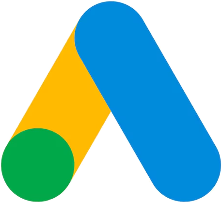
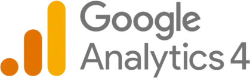
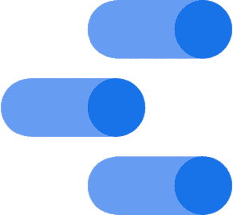
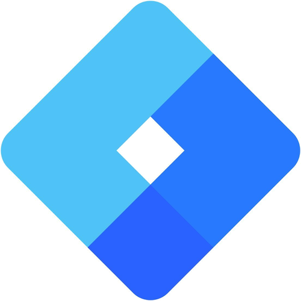
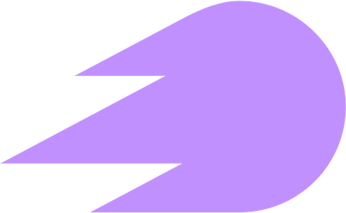

TikTok Ads
Video corto y creadores.
PublicidadCifra — growth marketing
Diseñamos sistemas de adquisición para transformar inversión publicitaria en llamadas, consultas y ventas. Sin métricas decorativas.
El mismo proceso para cualquier cliente, cualquier plataforma.
Negocio, oferta, datos, campañas, activos y proceso comercial.
Objetivos, métricas reales y plan de acción de mayor impacto.
Campañas, medición y mejoras coordinadas en ciclos cortos.
Revisión de calidad, reasignación de presupuesto y escala.
Se pueden tomar por separado, pero rinden más cuando trabajan sobre el mismo objetivo.
Planificación, ejecución y optimización de campañas orientadas a demanda real. Presupuesto asignado según intención, ubicación y valor comercial.
Medición del recorrido completo: desde el anuncio hasta la llamada, el lead calificado y la venta. Reportes útiles para decidir, no para archivar.
Auditoría y mejora de sitios y landing pages para que la propuesta se entienda, inspire confianza y convierta tráfico en acción.
Coordinación entre marketing, ventas y dirección para transformar datos dispersos en un proceso de crecimiento gestionable.
Operamos las cuentas de punta a punta: la campaña, el etiquetado y el tablero donde después se mira el resultado.

Búsqueda, Shopping, YouTube y Display.
PublicidadFacebook e Instagram.
PublicidadVideo corto y creadores.
PublicidadB2B por cargo, empresa e industria.
PublicidadCompra programática y control de inventario.
PublicidadUno de los canales más nuevos, ya en cuentas reales.
Publicidad
El recorrido completo, del anuncio a la venta.
Datos y medición
Tableros para decidir. Antes Data Studio.
Datos y medición
Etiquetado ordenado, sin conteos duplicados.
Datos y mediciónLos datos de cada plataforma, en un solo lugar.
Datos y medición
Keywords, competencia y visibilidad orgánica.
Datos y medición¿Trabajás con otra plataforma? Contanos cuál y vemos. Hablemos
Experiencia aplicada en mercados internacionales, negocios de servicios y educación.
Una estimación simple para ordenar la conversación — no una promesa de rendimiento.
?
?
?
?
No es una promesa de rendimiento — es un punto de partida para la primera conversación.
Medimos el recorrido completo: qué anuncio trajo la llamada y qué llamada terminó en cliente.
Pedir una propuesta ↗El primer paso es una charla breve sobre objetivos, canales, medición y proceso comercial. De ahí sale la propuesta.
O escribinos directo — cifra@cifragrowth.com WhatsApp @cifra.growth